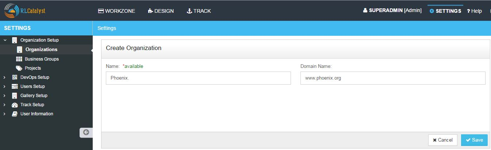
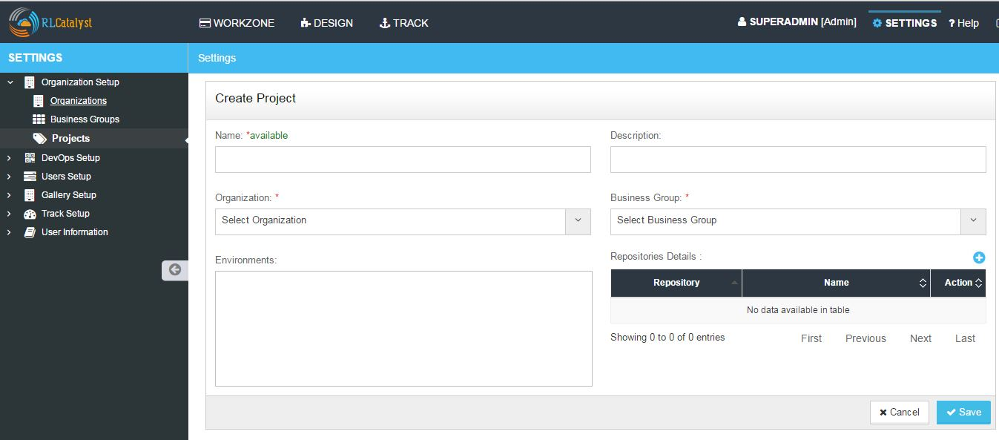
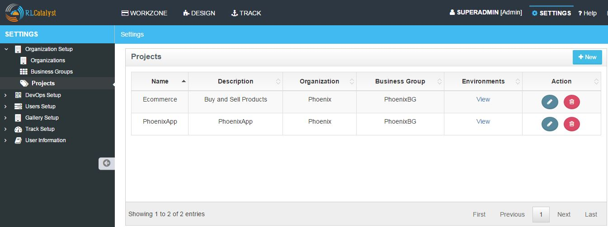
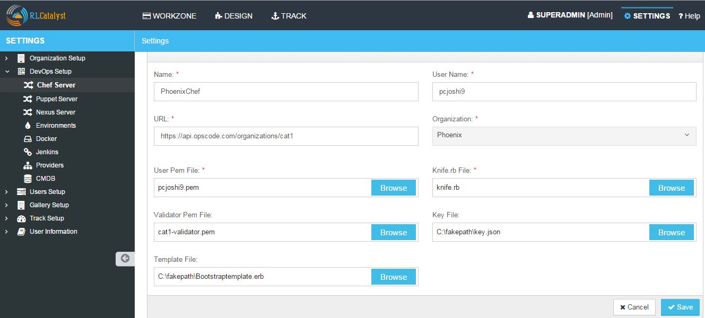
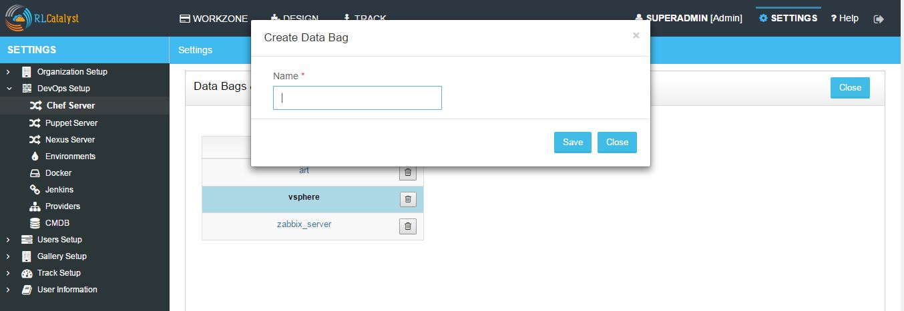
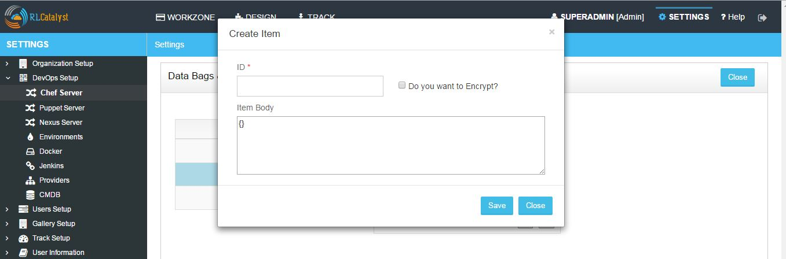
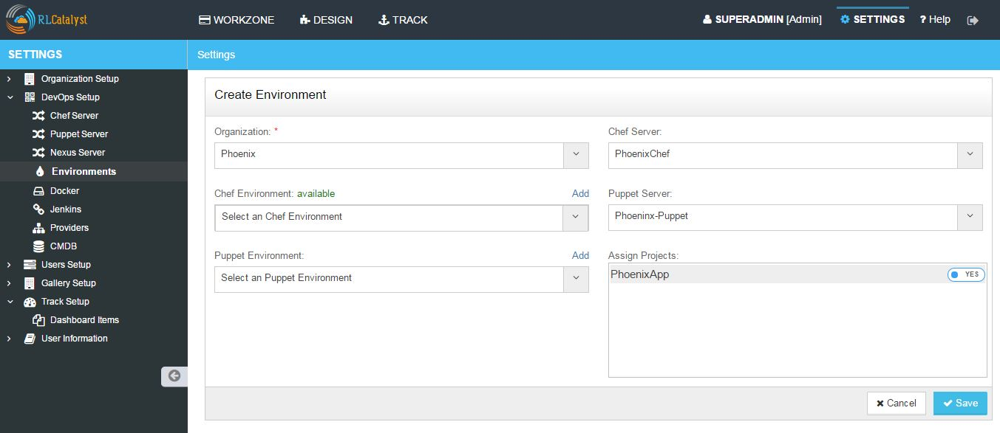
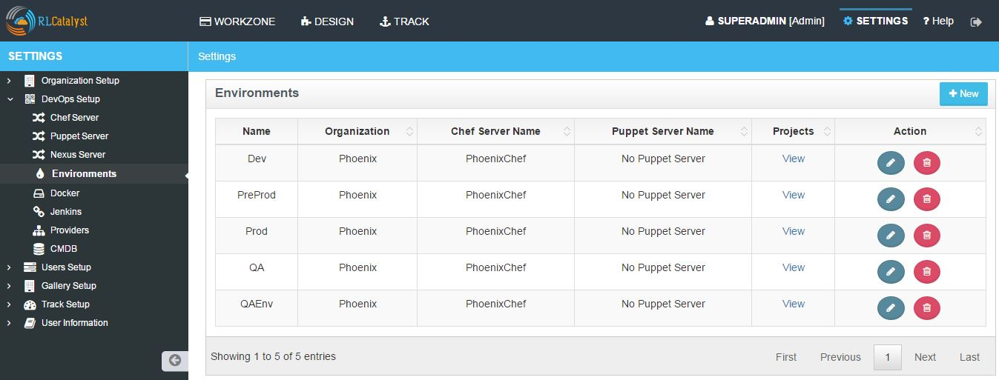

Organization¶
An Organization can be an enterprise or a business that can have multiple sub groups and projects.
Follow the steps below to create an organization

- From the main menu click on Settings
- Once you click on Settings, from the side menu click on Organization Setup
- Click Organizations
- Click on New button provided
- In Create Organization page enter Name (Organization Name) and Domain Name (Website Address)
- Click on Save button
- Now your Organization is setup and listed in the Organizations page

- Edit and Remove an Organization
- You can edit and remove an Organization.
- To Edit the Organization
- Click on edit button to edit the organization details
- To Remove the Organization
- Click on delete button to remove the organization from the list
Activate or Inactivate an Organization
You can activate or inactivate an Organization by using the cursor button provided. Remember, once you inactivate the organization all the entities relating to that organization will be disabled. You can enable the organization at any time. which will activate all the entities associated with that organization

Business Groups¶
Setup Business Groups for an Organization
In an Organization you can create multiple Business Groups. A Business Groups can be a business division in your organization
Follow the steps below to create a new Business Group in an Organization
- From the main menu click on Settings
- Once you click on Settings, from the side menu click on Organization Setup
- Click on Business Groups
- Click on New button provided
- Enter the Business Group name in the Business Group name field
- Select the Organization from the Organization drop down list
- Click on Save button

- Now the Business Group is setup and listed in the Business Groups page

- Edit and Remove a Business Group
- You can edit and remove a Business Group.
- To Edit the Business Group
- Click on edit button to edit Business Group details
- To Remove the Business Group
- Click on delete button to remove Business Group from the list
Projects¶
Setup Projects for a Business Group
In a Business Group you can create multiple Projects. A Project in RLCatalyst can be a running project in your business group. Each project can run one or multiple applications
Follow the steps below to create a new Project associating with Business Group and Organization

- From the main menu click on Settings
- Once you click on Settings, from the side menu click on Organization Setup
- Click on Projects
- Click on New button provided
- Enter the Project name in the Name field
- Provide a brief description about the project in the Description field
- Select the Organization from the Organization drop down list
- Select the Business Group from the Business Group drop down list
- Environments and repository details are not mandatory while creating project and will be explained in later section

- Click on Save button
- Edit and Remove a Project
- You can edit and remove a Project.
- To Edit the Project
- Click on edit button to edit Project details
- To Remove the Project
- Click on delete button to remove Project from the list
The following video will help you to setup an Organization, BusinessGroup, Project in RLCatalyst:
Chef Server¶
The Chef server acts as a hub for configuration data. The Chef server stores cookbooks, the policies that are applied to nodes, and metadata that describes each registered node that is being managed by the chef-client.
A node is any machine—physical, virtual, cloud, network device, etc.—that is under management by Chef.
A cookbook is the fundamental unit of configuration and policy distribution.
A policy file allows you to specify in a single document the cookbook revisions and recipes that should be applied by the chef-client.
RLCatalyst allows you to configure your own chef server. You can add either a hosted chef server or an on-premise installation of chefserver. If you dont have either of these, please create an account at https://getchef.opscode.com/signup . For more details on chef, please go to Chef Setup .
In RLCatalyst only one chef server can be configured for one organization. The same chef server cannot be associated to multiple organizations. Each chef server account will have a URL(Hosted/On-Premise), a User pem file, a Validator pem file and a knife file . You will get all these files when you create accounts in Chef.
Data/File needed for adding a Chef Server account in RLCatalyst
- Name : Alias or name of the chef server , to be identified in RLCatalyst
- User Name : User name of your chef server account
- URL : URL of the hosted or on-premise chef server
- User Pem File : User file to access your Chef Server account
- Knife.rb : Configuration file that you get while setting up the Chef server
- Validator Pem File : During the first chef-client run, this private key does not exist. Instead, the chef-client will attempt to use the private key assigned to the chef-validator, located in /etc/chef/validation.pem.
- Key File : It is used to encrypt the contents of the data bag item.
- Template File : The default bootstrap operation relies on an Internet connection to get the distribution to the target node. If a target node cannot access the Internet, then a custom template i.e, template file can be used to define a specific location for the distribution so that the target node may access it during the bootstrap operation.
To configure a new chef server follow the steps below:

- From the main menu click on Settings
- Once you click on Settings, from the side menu click on Devops Setup
- Click on Chef Server
- Click on New button provided
- Enter the configuration name in the Name field
- Enter the Chef user name in User Name field
- Provide or specify the Chef URL for the server to be configured
- Choose the organization from the Organization drop down list
- Upload the user PEM file provided by the Chef Server in the User PEM File field
- Upload the validator PEM file provided by the Chef Server in the Validator PEM File field
- Upload the Knife.rb file provided by the Chef Server in the Knife.rb File field
- Upload the key file which is used for Databag
- Upload the Template file which is used to Bootstrap node
- Click on Save button
- Now your chef server is configured successfully and listed in the Chef server management page.

- Edit and Remove Chef Server configuration
- You can edit and remove a chef server configuration.
- To Edit the Chefserver
- Click on edit button to edit chef server configuration details
- To Remove the Chefserver
- Click on delete button to remove chef server configuration from the list
Following video demonstrates how to configure a chef server in RLCatalyst:
Import nodes from Chef Server
You can import existing nodes from the configured chef server into RLCatalyst by selecting the required Business Group and Project. These imported nodes can be operated from the Workzone.
- To import the existing nodes click on import button
- Select the environment from Environment drop down list for the node to be imported . These are the environments available in your Chef account
- Select the respective checkbox in the Action column

- Click on the Import Nodes button
- Select the business group from Business Group drop down list
- Select the project from the Project drop down list
- Enter the user name to access the chef server for import in the User Name field
- Choose authentication type from the Choose Authentication Type drop down list. RLCatalyst provides two types of authentication, you can either choose Password or by uploading the PEM file
- Type Password or upload PEM file
- Click on Import button
- Close the popup containing the success message ‘Node imported’
- Click on Workzone
- The imported node will be available in the respective Environment of the Workzone
- Chef Factory
It consists of common and re-usable recipes and cookbooks.
- Click on Chef factory icon present in the Action column , Chef factory page will open.
- Go to Sync tab, here all the cookbooks and roles which are present in the chef server will be listed.

- Select the Cookbook and click on Sync
- Close the popup window
- Go to Cookbooks tab, here you can find the downloaded (Synched) cookbook
Databags and Items for Chef server
A data bag is a global variable that is stored as JSON data and is accessible from a Chef server.A data bag is indexed for searching and can be loaded by a recipe or accessed during a search.
A data bag item may be encrypted using shared secret encryption. This allows each data bag item to store confidential information (such as a database password) or to be managed in a source control system (without plain-text data appearing in revision history). Each data bag item may be encrypted individually; if a data bag contains multiple encrypted data bag items, these data bag items are not required to share the same encryption keys.
How to create Databag and Items for Chef Server?
- In the Chef Server Page, Click on Databag icon in the Action column of your chef server
- Click on + icon above the List of Data Bags column header


- Enter the name of the Databag in the Name field

- Click on Save button
- Select the Created Databag and create an item by clicking + icon above the ‘Items for -Databagname’ column header
- Enter the ID and Item body
- Select the checkbox Do you want to Encrypt
- Click on Save button
- Now Databag and its item is created. Item body is shown in last column
- Click on Close button to navigate back to Chef server management page
Setup Environments¶
In an Organization you can create multiple Environments. These environments need to be linked to Projects back. For example: Production, Development, Testing and so on.
Follow the steps to setup a new Environment in an Organization:
- From the main menu click on Settings
- Once you click on Settings, from the side menu click on Devops Setup
- Click on Environments
- Click on New button provided
- Select the Organization from the Organization drop down list
- Select the server from the Chef Server drop down list
- You can see a list of environments in teh drop down. These are the environments defined in your chef server account. You can select one from this drop down list OR you can Add new Environments to chef server by clicking on Add link provided right above the select an Chef Environment drop down
- Now Enter the Environment name to be created


- Click on Add button
- Now select the environment you added to the chef server from the Chef Environment drop down list

- Assign the project by toggling to ‘Yes’
- Click on Save button.
- Now the environment is setup and listed in the Environments page
Hereby attaching a video which will demonstrate as in how to Create Environment in RLCatalyst: